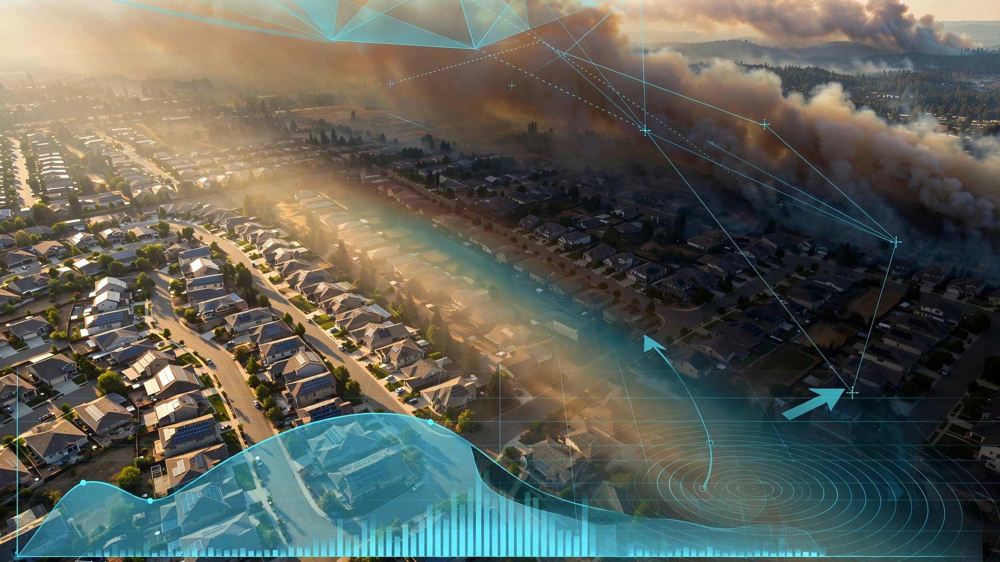

System and Method for Real-Time Wildfire Smoke Plume Height Estimation and Trajectory Prediction Using Spatially Distributed Rooftop Solar Panel Irradiance Anomaly Correlation and Atmospheric Transport Model Data Assimilation

Abstract
Disclosed is a system and method for estimating wildfire smoke plume height, horizontal extent, optical density, and trajectory in near-real-time by treating the geographically distributed network of rooftop solar photovoltaic (PV) installations across a region as a passive irradiance sensor array. Each grid-tied PV inverter continuously reports DC power, voltage, and current at 1-15 second intervals to its monitoring platform. When a smoke plume passes between the sun and a subset of PV installations, the affected panels experience a measurable drop in global horizontal irradiance (GHI) that propagates spatiotemporally across the sensor array as the plume moves. By correlating the onset time, magnitude, and duration of irradiance anomalies across installations with known geographic coordinates, panel orientations, and clear-sky irradiance models, the system triangulates the plume's ground-projected shadow boundary, computes plume altitude from solar geometry and shadow displacement, estimates aerosol optical depth from the fractional irradiance reduction, and predicts plume trajectory by assimilating the derived plume state into a Lagrangian atmospheric transport model. The system requires no dedicated smoke-sensing hardware: it repurposes telemetry data already collected by hundreds of thousands of existing residential and commercial PV monitoring systems.
Field of the Invention
This invention relates to wildfire smoke detection and tracking, specifically to repurposing existing distributed solar photovoltaic monitoring infrastructure as a spatially resolved irradiance sensor network for smoke plume characterization and trajectory prediction.
Background
Wildfire smoke kills more people than wildfire flames. Xu et al. (The Lancet Planetary Health, 2021) estimated that wildfire smoke exposure causes 33,500-40,000 excess deaths annually worldwide, with PM2.5 concentrations during major smoke events exceeding 500 μg/m³ in populated areas (compared to EPA's 24-hour standard of 35 μg/m³). Burke et al. (Science Advances, 2021) found that wildfire smoke accounted for up to 25% of total PM2.5 in the western United States over the 2016-2020 period, with a 5,000% increase in population-weighted smoke PM2.5 exposure since 2006.
Current smoke plume monitoring relies on three primary methods, each with limitations:
- Satellite remote sensing: NOAA's Hazard Mapping System (HMS) uses GOES-16/17 geostationary and polar-orbiting (VIIRS, MODIS) satellites to detect and outline smoke plumes. HMS analysts manually delineate plume boundaries from visible and near-infrared imagery, typically updating every 1-3 hours during active events. Plume height is not directly measured by these sensors; the CALIPSO lidar can profile plume vertical structure but has a 16-day orbit repeat and a 70-meter ground swath. MISR on Terra retrieves plume height from multi-angle stereo but passes over any location only once every 9 days. Neither provides continuous monitoring.
- Ground-based air quality monitors: EPA's AirNow network includes approximately 2,000 continuous PM2.5 monitors in the US, spaced 20-100 km apart in most regions. These detect smoke after it reaches ground level but cannot track elevated plumes that have not yet descended, and provide no information about plume height or trajectory.
- Ceilometers and lidar: Ground-based laser instruments (Vaisala CL31/CL51) measure aerosol backscatter profiles up to 15 km altitude, providing continuous plume height data at a single point. The US has approximately 400 ceilometers (NOAA ESRL), concentrated at airports and research stations. Spatial coverage is sparse; metropolitan areas with millions of affected residents may have only 2-5 instruments.
Meanwhile, US residential solar capacity has reached over 47 GW from 4.4 million installations (EIA, Q1 2026), with California alone hosting over 1.9 million systems (California DG Stats). Each installation typically reports power output at 5-15 second intervals to its inverter monitoring platform (Enphase Enlighten, SolarEdge Monitoring, Tesla app, etc.). The geographic density of PV installations in fire-prone regions like California, Oregon, and Colorado exceeds 100 systems per square kilometer in many suburban areas.
The relationship between smoke aerosol optical depth (AOD) and solar irradiance attenuation is well-characterized. Rutan et al. (Solar Energy, 2020) demonstrated that wildfire smoke can reduce GHI by 20-80% depending on plume density, with the attenuation following a modified Beer-Lambert relationship. Li et al. (Renewable Energy, 2019) showed that existing PV monitoring data can estimate GHI with 3-5% accuracy after accounting for panel degradation and soiling. Kumler et al. (Applied Energy, 2021) used PV fleet data to reconstruct cloud shadow maps, demonstrating the spatial irradiance sensing capability of distributed PV arrays. None of these prior works extends the approach to smoke plume height estimation, optical depth mapping, or trajectory prediction through atmospheric transport model coupling.
The gap in the art is a complete system that: (a) treats existing PV monitoring telemetry as a dense irradiance sensor network with known geographic coordinates and panel geometry; (b) separates smoke-induced irradiance attenuation from cloud shadows, soiling, and equipment degradation using spectral, temporal, and spatial discrimination features; (c) estimates plume altitude from solar geometry and the displacement between the plume's nadir position and its ground shadow; (d) derives spatially resolved aerosol optical depth from the magnitude of irradiance reduction; and (e) assimilates the derived plume state into an atmospheric transport model for trajectory forecasting.
Detailed Description
1. PV Telemetry Ingestion and Normalization
The system ingests PV inverter telemetry from multiple monitoring platforms through their respective APIs (Enphase API v4, SolarEdge Monitoring API, Tesla Owner API, Fronius Solar API, SMA Sunny Portal API, Generac PWRview API, among others). For each participating installation, the system maintains a registration record containing: geographic coordinates (latitude, longitude, from installer records or geocoded address); panel array azimuth, tilt, and total nameplate capacity (from installer records or inferred from clear-sky production curve fitting); inverter model and panel model (for temperature coefficient and spectral response corrections); and historical performance data for degradation and soiling baseline estimation.
Raw DC power output from each installation is normalized to a capacity-weighted performance ratio (PR) at each timestamp by dividing measured power by the expected clear-sky power for that installation at that moment. Expected clear-sky power is computed using the pvlib clear-sky irradiance model (Ineichen-Perez formulation) with solar position from the NREL Solar Position Algorithm, adjusted for panel geometry, temperature coefficient (using ambient temperature from the nearest weather station or inverter-reported panel temperature), and a slowly varying soiling/degradation baseline fitted over the prior 30 days of clear-sky midday observations. A PR value of 1.0 represents clear-sky performance; a PR of 0.5 indicates that the installation is producing 50% of its expected clear-sky output.
2. Smoke-Cloud Discrimination
Both clouds and smoke reduce solar irradiance. Distinguishing between them is critical for plume tracking. The system exploits four discriminative features:
- Temporal gradient: Cloud shadows transit a point in 10-180 seconds (cumulus at typical wind speeds) with sharp onset and recovery edges. Smoke plumes produce gradual irradiance ramp-downs over 3-30 minutes as the plume density increases at a given location, followed by a plateau and an equally gradual recovery. The system computes the 10th and 90th percentile slopes of the PR transition and classifies sharp transitions (> 5% PR per 30 seconds) as cloud and gradual transitions (< 2% PR per 30 seconds) as smoke. Intermediate rates are classified probabilistically using a logistic regression trained on labeled satellite-concurrent events.
- Spatial coherence scale: Cloud shadows produce spatially compact irradiance reductions that move rapidly (5-20 m/s) in a consistent direction. Smoke plumes produce spatially diffuse irradiance reductions over kilometer-scale regions that persist for minutes to hours. The system computes the spatial autocorrelation length of PR anomalies across the installation network; smoke events exhibit autocorrelation lengths exceeding 2 km, while individual cloud shadows remain below 500 m. Multi-cell cloud fields can produce larger coherence scales, but their temporal structure (oscillating PR as cells pass) differs from the monotonic PR reduction of smoke.
- Diffuse-to-direct ratio proxy: Smoke increases the diffuse fraction of GHI disproportionately relative to the total GHI reduction. For installations with microinverter-level monitoring (e.g., Enphase IQ series), the system compares production ratios between panels at different tilts and azimuths on the same roof. Under clear sky, west-facing panels produce significantly less than south-facing panels in the morning; under smoke, the diffuse dominance reduces this differential. The ratio of inter-panel production spread to absolute production level serves as a proxy for diffuse fraction, distinguishing smoke (high diffuse fraction, moderate total reduction) from thick cloud (low diffuse fraction, severe total reduction).
- Spectral signature (where available): Some bifacial panel installations with separate front/rear current monitoring provide a crude spectral discrimination capability. Smoke preferentially attenuates shorter wavelengths (blue scattering), reducing front-side relative to rear-side (which receives primarily diffuse, longer-wavelength light) differently than water-droplet clouds. This feature is available for only a subset of installations but provides strong discrimination where present.
3. Plume Shadow Boundary Detection
Once smoke-classified PR anomalies are identified across the installation network, the system delineates the plume's ground-projected shadow boundary using a spatial interpolation and thresholding approach:
- Anomaly field interpolation: The PR anomaly values (1.0 minus normalized PR) at each installation's geographic coordinates are interpolated onto a regular 500-meter grid using ordinary kriging with a Matérn covariance kernel. The kriging variance at each grid point provides a confidence measure that reflects installation density; areas with sparse PV coverage produce high-variance estimates.
- Boundary extraction: The 0.10 PR anomaly contour (representing a 10% irradiance reduction) is extracted as the outer plume shadow boundary. The 0.30 contour defines the dense plume core. Contours are smoothed with a 2-km Gaussian kernel to suppress noise from individual installation measurement errors.
- Temporal tracking: Successive shadow boundary polygons are computed at 1-minute intervals and tracked using an intersection-over-union (IoU) association algorithm to maintain plume identity through time. Plume ground-shadow velocity is estimated from the centroid displacement of successive polygons.
4. Plume Height Estimation from Solar Shadow Geometry
The key novel contribution of this disclosure is the geometric estimation of smoke plume altitude from the displacement between the plume's ground shadow and its nadir position, using solar position as the triangulation reference:
- Solar geometry: At any given time, the sun's azimuth (θ_sun) and elevation (α_sun) at the plume location are precisely known from the SPA algorithm. A smoke plume at height H above the ground casts a shadow displaced from its nadir position by a distance D in the anti-solar azimuth direction, where D = H / tan(α_sun).
- Nadir position estimation: The plume's nadir position (the point on the ground directly below the densest smoke) is estimated by projecting the shadow centroid toward the sun along the solar azimuth by the distance D. Because H is the unknown, the system uses an iterative approach: for each candidate height H_i (tested at 100-meter intervals from 500 m to 12,000 m AGL), compute the corresponding nadir position and evaluate the consistency of the irradiance anomaly field with a plume at that height. The correct height produces a nadir position that lies upwind of the shadow (consistent with atmospheric transport) and yields a plume cross-section whose width-to-height aspect ratio falls within the physically plausible range of 0.5-5.0 for convective plumes (Val Martin et al., Atmospheric Chemistry and Physics, 2013).
- Multi-time triangulation: As the sun moves across the sky, the shadow displacement direction and magnitude change for a stationary plume. By observing the shadow at multiple times (10-30 minute intervals), the system over-determines the height estimate and reduces ambiguity. A least-squares optimization minimizes the residual between predicted shadow positions (for a candidate plume height and horizontal position) and observed shadow boundaries across the time series. This approach is analogous to multi-angle stereo used by the MISR satellite instrument, but achieves multi-angle coverage through temporal observation from a fixed sensor array rather than simultaneous observation from multiple viewpoints.
- Height accuracy analysis: The method's geometric sensitivity depends on solar elevation. At solar elevation α_sun = 60° (midday, mid-latitudes), a plume at 3,000 m AGL casts a shadow displaced 1,732 m from nadir. A 500-m grid resolution and 200-m shadow position uncertainty yield a height uncertainty of approximately ±350 m. At α_sun = 30° (morning/evening), the same plume casts a 5,196 m displacement, reducing relative height uncertainty to ±200 m. At solar elevations below 15°, shadow displacement exceeds 11 km and the method becomes unreliable due to terrain effects and atmospheric refraction. The system reports confidence intervals that widen at high solar elevation and narrow at low elevation, and disables height estimation when α_sun < 15°.
5. Aerosol Optical Depth Estimation
The magnitude of GHI reduction at each installation provides a spatially resolved estimate of aerosol optical depth (AOD) through the smoke plume along the sun-to-surface path:
- Direct normal irradiance (DNI) attenuation: For installations with single-axis trackers or south-facing fixed panels at tilt angles within 15° of the local latitude, the measured PR reduction is dominated by DNI attenuation. The system applies the Beer-Lambert law: AOD_550 = -ln(PR) × cos(θ_z) / (β_ext,smoke / β_ext,550), where θ_z is the solar zenith angle and β_ext,smoke/β_ext,550 is the ratio of smoke extinction coefficient at the effective panel spectral response to the reference 550 nm wavelength. For wildfire smoke, this ratio is approximately 0.85-1.15 depending on fuel type and combustion efficiency (Selimovic et al., Atmospheric Chemistry and Physics, 2019).
- Slant-path to vertical AOD conversion: The sun-to-surface slant path AOD is converted to vertical-column AOD by dividing by the air mass factor (approximately 1/cos(θ_z) for θ_z < 75°). Combined with the plume height estimate from Section 4, the vertical AOD is further refined to represent the plume's AOD contribution alone, excluding background atmospheric extinction.
- Spatially resolved AOD map: AOD estimates from individual installations are interpolated onto the same 500-meter grid used for shadow boundary detection, producing a spatially resolved AOD map that characterizes plume density variation across its horizontal extent.
6. Atmospheric Transport Model Data Assimilation
The derived plume state (position, height, horizontal extent, AOD distribution) is assimilated into a Lagrangian atmospheric transport model for trajectory prediction:
- Plume initialization: The 3D plume volume is initialized from the shadow boundary (horizontal extent), height estimate (vertical position), and AOD distribution (mass loading proxy) at the current observation time. Plume mass is partitioned into 10,000-50,000 Lagrangian particles distributed throughout the 3D plume volume with density proportional to the AOD map.
- Transport model: Each particle is advected using wind fields from a numerical weather prediction (NWP) model. The system uses either the NOAA HYSPLIT model (publicly available, 12-km resolution NAM or 3-km HRRR meteorology) or the higher-resolution WRF-Chem model (configurable to 1-km resolution). Particles undergo vertical diffusion using a random displacement model with eddy diffusivity profiles from the NWP boundary layer parameterization. Dry deposition removes particles at the surface at a velocity of 0.1-1.0 cm/s depending on particle diameter assumptions.
- Sequential data assimilation: As new PV-derived plume observations become available every 1-5 minutes, the system updates the particle ensemble using an ensemble Kalman filter (EnKF). The observation operator projects the 3D particle distribution into predicted shadow boundaries and AOD fields, which are compared against PV-derived observations. The EnKF update adjusts particle positions and masses to minimize the observation-prediction mismatch, constraining the transport model with continuous ground truth.
- Forecast products: The assimilated transport model produces: 1-hour, 6-hour, and 24-hour plume trajectory forecasts as probability maps (showing the likelihood that smoke concentration exceeds a threshold at each grid point and time); predicted ground-level PM2.5 concentration fields by coupling the column AOD with a planetary boundary layer height estimate from the NWP model and a vertical mixing parameterization; and expected time-of-arrival maps showing when smoke is predicted to reach populated areas not yet affected.
7. System Architecture and Data Flow
The system operates in three tiers:
- Edge tier (inverter level): Existing PV inverter monitoring hardware reports DC power, voltage, and current at its native sampling rate (1-15 seconds). No modification to the inverter firmware or hardware is required. The inverter manufacturer's cloud platform aggregates this data as part of its standard monitoring service.
- Aggregation tier (cloud platform): A server process ingests normalized PR values from participating inverter platforms via API polling or webhook push. Smoke-cloud discrimination, shadow boundary detection, and plume height estimation are computed on this tier using the PR anomaly fields from all participating installations in the region. Computational cost is dominated by the kriging interpolation: O(N²) for N installations within the plume-affected region, mitigated by partitioning into 50-km tiles and using the FIT-GP (fixed-rank iterative GP) approximation for tiles with > 500 installations.
- Forecast tier: The atmospheric transport model runs on a dedicated compute instance (or cloud GPU for WRF-Chem), ingesting plume state from the aggregation tier and NWP wind fields from NOAA's operational model output. Forecast products are published via OGC WMS/WFS-compliant endpoints for integration with fire management GIS systems (IRWIN, WFDSS) and public air quality platforms (AirNow, PurpleAir).
8. Figures Description
Note: Figures are described textually for this web disclosure format. Technical illustrations corresponding to the descriptions below would accompany a formal patent filing.
- Figure 1: System architecture showing PV installations reporting to inverter cloud platforms, aggregation tier ingesting multi-platform data, plume analysis pipeline (discrimination → shadow detection → height estimation → AOD mapping), transport model assimilation, and forecast product dissemination to fire management and air quality platforms.
- Figure 2: Solar shadow geometry diagram showing a smoke plume at height H, the sun at elevation α and azimuth θ, the shadow displacement D = H/tan(α), and the nadir-to-shadow vector relationship used for height triangulation.
- Figure 3: Temporal PR signatures for three event types: (a) cumulus cloud shadow (sharp onset at t=0, sharp recovery at t=45s, PR drops to 0.3), (b) smoke plume passage (gradual onset over 8 minutes, plateau at PR=0.65 for 40 minutes, gradual recovery over 12 minutes), (c) morning haze (gradual onset correlated with sunrise, monotonic clearing, affects all installations uniformly). Discriminative features annotated: transition slope, duration, spatial coherence scale.
- Figure 4: Map view showing PV installation locations (dots colored by PR anomaly from blue=clear to red=heavy smoke), interpolated shadow boundary contours (0.10 and 0.30 PR anomaly), estimated plume nadir position (star), solar azimuth projection line, and the shadow displacement vector used for height estimation.
- Figure 5: 6-hour forecast probability map showing predicted smoke concentration exceedance zones at T+1h, T+3h, and T+6h, with wind barbs, plume centroid trajectory, and population exposure counts for each forecast interval.
Claims
- A system for real-time wildfire smoke plume detection and characterization, comprising: a data ingestion layer that receives photovoltaic power production telemetry from a spatially distributed network of rooftop solar installations via inverter monitoring platform APIs; a normalization module that converts raw power measurements to performance ratio values by dividing measured output by expected clear-sky output computed from solar position, panel geometry, and a historically fitted degradation baseline; a smoke-cloud discrimination module that classifies performance ratio anomalies as smoke-induced or cloud-induced based on temporal gradient, spatial coherence scale, and diffuse fraction proxy features; and a shadow boundary detection module that delineates the ground-projected shadow of the smoke plume by interpolating smoke-classified anomalies across the installation network and extracting contours at configurable performance ratio thresholds.
- The system of claim 1, further comprising a plume height estimation module that computes smoke plume altitude above ground level from the geometric relationship between the plume's ground shadow position and the known solar azimuth and elevation at the observation time, wherein the shadow displacement distance from the plume nadir position equals the plume height divided by the tangent of the solar elevation angle.
- The system of claim 2, wherein plume height estimation is refined through multi-time triangulation by observing shadow displacement direction and magnitude changes as solar position varies over a 10-30 minute window, over-determining the height estimate through least-squares optimization of predicted versus observed shadow positions across the time series.
- The system of claim 1, further comprising an aerosol optical depth estimation module that derives spatially resolved aerosol optical depth from the magnitude of performance ratio reduction at each installation using a modified Beer-Lambert relationship, accounting for solar zenith angle, slant-path-to-vertical-column conversion, and the spectral response characteristics of the photovoltaic panels.
- The system of claim 1, further comprising an atmospheric transport model data assimilation module that initializes a Lagrangian particle ensemble from the derived plume state (shadow boundary, height, aerosol optical depth distribution) and sequentially updates the ensemble using an ensemble Kalman filter as new PV-derived plume observations become available, producing trajectory forecasts and ground-level concentration predictions.
- A method for estimating the altitude of a wildfire smoke plume using existing solar photovoltaic infrastructure, comprising: receiving power production telemetry from a plurality of geographically distributed PV installations; identifying a spatially coherent region of smoke-induced irradiance reduction across the installation network; computing the centroid of the irradiance reduction region as the plume ground shadow position; computing the solar azimuth and elevation at the shadow centroid location and time; and estimating plume altitude by projecting the shadow centroid toward the sun along the solar azimuth by a distance equal to the candidate altitude divided by the tangent of the solar elevation, selecting the altitude that produces a nadir position consistent with upwind location, physically plausible plume geometry, and multi-time shadow displacement observations.
- The method of claim 6, further comprising generating smoke plume trajectory forecasts by assimilating the estimated plume state into an atmospheric transport model driven by numerical weather prediction wind fields, and disseminating the forecasts as probability maps showing predicted smoke concentration exceedance zones and time-of-arrival estimates for populated areas.
- The system of claim 1, wherein the smoke-cloud discrimination module exploits a diffuse-to-direct ratio proxy derived from comparing production ratios between panels at different tilts and azimuths on multi-orientation installations, wherein smoke increases the diffuse fraction disproportionately relative to total irradiance reduction, reducing inter-panel production spread relative to absolute production level.
- The system of claim 1, wherein the normalization module estimates expected clear-sky power using a solar irradiance model that accounts for panel azimuth, tilt, nameplate capacity, temperature coefficient, and a slowly varying soiling and degradation baseline fitted over prior clear-sky observations, such that performance ratio anomalies reflect atmospheric attenuation events rather than equipment-level variation.
- The system of claim 5, wherein the atmospheric transport model produces predicted ground-level PM2.5 concentration fields by coupling the vertically integrated aerosol optical depth derived from PV observations with planetary boundary layer height estimates from numerical weather prediction model output and a vertical mixing parameterization that distributes plume mass between the elevated transport layer and the surface mixed layer.
Implementation Notes
A proof-of-concept deployment would target a California county with high PV penetration and wildfire exposure (e.g., Sonoma, San Diego, or San Bernardino County). Enphase alone monitors over 1.4 million residential systems in the US, with typical suburban installation density exceeding 50-200 systems per square kilometer in California. The proof-of-concept would ingest Enphase API data from approximately 5,000-20,000 installations across a 50×50 km region, cross-validated against concurrent satellite AOD retrievals from the GOES-16 ABI aerosol product and ground-truth PM2.5 measurements from AirNow monitors.
The plume height estimation method has an inherent limitation at high solar elevations: when the sun is near zenith (α_sun > 75°), the shadow displacement D approaches zero regardless of plume height, making height estimation degenerate. In California, this condition occurs for approximately 2-3 hours around solar noon during summer months. The system disables height estimation during these periods and interpolates from surrounding time windows. Conversely, at low solar elevations (α_sun < 15°), shadow displacements become very large (>11 km for a 3 km plume), and terrain shadowing, atmospheric refraction, and the limited extent of the PV network degrade accuracy. The system restricts height estimation to 15° < α_sun < 75°, covering approximately 8-10 hours of the daytime in summer and 5-7 hours in winter at mid-latitudes.
Privacy considerations are minimal: PV power output data contains no personally identifiable information beyond the installation address (already known to the inverter platform operator). The system requires only aggregated, anonymized PR anomaly values at geographic coordinates; individual energy production volumes, consumption data, and customer identities are neither ingested nor stored. A privacy-preserving variant could operate on spatially binned (1-km grid) PR median values provided by each inverter platform, eliminating even geographic coordinate-level installation data from the aggregation tier.
Latency analysis: From smoke onset to plume characterization, the end-to-end latency comprises inverter measurement latency (1-15 seconds), API polling interval (15-60 seconds for most platforms), data normalization and discrimination (< 5 seconds compute), shadow boundary detection and height estimation (< 10 seconds compute), and transport model assimilation (< 30 seconds for HYSPLIT, 2-5 minutes for WRF-Chem). Total latency: approximately 1-3 minutes from smoke onset to initial plume characterization. This compares favorably with satellite detection latency of 15-60 minutes (HMS) and ground monitor detection latency of 15-60 minutes (dependent on plume descent to surface level). The PV-based system detects elevated plumes before they reach ground level, providing advance warning to downwind communities.
Cost: The system uses only existing PV telemetry data and publicly available NWP model output. Infrastructure cost is limited to cloud compute for the aggregation and forecast tiers, estimated at $500-2,000/month for a regional deployment covering 50,000 installations. No dedicated hardware installation, maintenance, or sensor calibration is required.
Prior Art References
- Xu et al., The Lancet Planetary Health (2021) — 33,500-40,000 annual excess deaths worldwide from wildfire smoke exposure
- Burke et al., Science Advances (2021) — Wildfire smoke accounts for up to 25% of total PM2.5 in western US (2016-2020)
- NOAA Hazard Mapping System — Operational satellite-based smoke plume detection and delineation
- CALIPSO — Spaceborne lidar for aerosol vertical profiling (16-day revisit, 70 m swath)
- MISR on Terra — Multi-angle stereo plume height retrieval (9-day revisit)
- EPA AirNow — Ground-based PM2.5 monitoring network (~2,000 sites in US)
- EIA Electric Power Monthly — US distributed solar capacity statistics (47+ GW, 4.4M installations)
- California DG Stats — California distributed generation installation database (1.9M+ systems)
- Rutan et al., Solar Energy (2020) — Wildfire smoke reduces GHI by 20-80% depending on plume density
- Li et al., Renewable Energy (2019) — PV monitoring data estimates GHI with 3-5% accuracy
- Kumler et al., Applied Energy (2021) — PV fleet data reconstructs cloud shadow maps
- Val Martin et al., Atmospheric Chemistry and Physics (2013) — Wildfire plume height observations and aspect ratio constraints
- Selimovic et al., Atmospheric Chemistry and Physics (2019) — Smoke aerosol optical properties as a function of fuel type and combustion efficiency
- pvlib-python — Open-source solar energy modeling library (Ineichen-Perez clear-sky model, SPA solar position)
- NOAA HYSPLIT — Lagrangian atmospheric transport and dispersion model
- WRF-Chem — Weather Research and Forecasting model with atmospheric chemistry